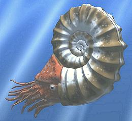
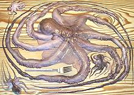
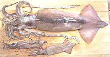
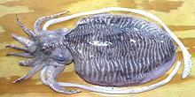

Cephalopods
[Class Cephalopoda]
Cephalopods, the name meaning "head footed", have been here for a
very long time, some 500 million years. They first appeared in
recognizable form in the last quarter of the Cambrian period. As far
as we know, they all originally had shells, but today only the Nautilus
has a true external shell, and it is restricted to the tropics of the
Southwest Pacific. The most successful shelled cephalopods were the
Ammonites (8 orders), which were extremely common for around 340 million
years, but met extinction in the same ecological disaster that did in
the dinosaurs. Their curled shells, some simple, some ornate, some up
to 6 feet in diameter, litter the fossil beds of the world.
The most common cephalopods living today have all given up the
protective shell for high mobility, but rather than discarding the
shells, they have used them in innovative ways. Squids use it as a
body stiffener called a Gladius, and some Octopi also have a Gladius.
The Cuttlefish has evolved its shell into a porous "cuttlebone" used
to control flotation. One squid-like cephalopod, Spirula, has a
shell very similar to a nautilus shell, but entirely within the body,
used as a flotation device. The female Paper Nautilus (genus
Argonauta, actually a kind of octopus), creates a shell that is
both a flotation device and a brood chamber for eggs.
Cephalopods are by far the most intelligent invertebrates. Octopi
can even figure out how to remove screw caps from jars. Their
intelligence, however, is composed very differently from ours. With the
exception of the Nautilus, they have very sophisticated eyes, though
they are different in design from ours. Their most amazing feature is
the ability to almost instantly change the pattern and colors of their
skin to match their background, and in the case of the cuttlefish, even
change its texture.
Rendering by Nobu Tamura distributed under license
Creative Commons
Attribution-ShareAlike v3.0 Unported.


Shellfish

Ingredients

Search
CloveGarden
SAFARI
Users
|
|
|
Three orders of cephalopods are of culinary importance. Each of
these orders has multiple detail pages linked from the paragraphs
below.
Octopus

[Order Octopoda]
Octopi are considered very good eating everywhere they are found,
except North America, though even here they are easily available in
our many Asian markets. There are over 300 species of Octopus worldwide,
and all are venomous, but only the Blue Ringed Octopi (genus
Hapalochlaena) are dangerous to humans. These small octopi carry
enough venom to kill 26 adult humans.
Details and Cooking.
Squid

[Order Teuthida]
Squid are the largest, most mobile and perhaps most intelligent of the
mollusks. Giant squid grow to over 33 feet from tentacle tip to tail and
Colossal Squid can exceed 46 feet. These huge squid are suspected of
being among the most intelligent creatures in the sea. You will not be
eating one of those because they live too deep to catch and their flesh
is laced with toxic ammonia anyway. Market size squid (different species)
are, however, plentiful and good eating.
Details and Cooking.
Cuttlefish

[Order Sepiida Genus Sepia]
Cuttlefish are found in coastal waters throughout the world - except the
Americas. Since they are not native to our waters, they are not as well
known as Squid and Octopus, but they are easily available in our large
Asian markets here in California, and very good eating.
Details and Cooking.
|
seacephal 160402 - www.clovegarden.com
©Andrew Grygus - agryg@clovegarden.com - Photos
on this page not otherwise credited © cg1
- Linking to and non-commercial use of this page permitted